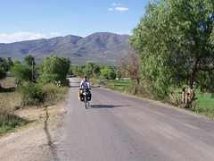

Blogs
Mexico City: Culture, Tacos, Demonstrations

We spent a week visiting incredible Mexico City, probably the world's largest city with close to 20 million inhabitants. Despite the warnings of everyone (as is common for any large city) we didn't have any trouble. No trouble in the streets, no trouble in the subway, no trouble on the buses. We felt comfortable walking and using the subway returning home the last night even though it was after 11pm.
Teotihuacan, Toltecs, and Aztecs

Queretaro and the Ciclonautas
In Querétaro we visited with Dulce and Andrei, whom we'd heard about from our Dutch cycle-touring friends Dick and Els. We had a delightful evening and day with them enjoying the area and hearing their stories. They're now temporarily retired from bike touring - and have a delightful 18-month-old named Emiliano and are living the life of a young family. From 1998 to 2001, with nearly no resources, they traveled from Querétaro south through Mexico, Central America, and South America all the way to our destination, Ushuaia. Unlike us, they had scarce resources and had to earn money along the way. Click here to read their whole story in both English and Spanish and see their pictures.
Queretaro was yet another delightful, interesting, old city, with cultural events and music on every corner, and a 500-year-old church on every block. We spent a couple of days taking it in and hearing Andrei and Dulce's stories. And Andrei took us (along with new Belgian friends Lorenzo and Sarah) on a tour of the city.
The Mexican "Ciclonautas" - Dulce, Andrei, and Fernando (Español y Inglés)
(Esta historia es debajo en inglés y español).
In Querétaro we visited with Dulce and Andrei, whom we'd heard about from our Dutch cycle-touring friends Dick and Els. We had a delightful evening and day with them enjoying the area and hearing their stories. They're now temporarily retired from bike touring - and have a delightful 18-month-old named Emiliano and are living the life of a young family. Here is their story, in both English and Spanish.
The Story of the Cyclonauts of Mexico, from Dick and Els' Website. Translation to English in Blue.
La Historia de los Ciclonautas
Dolores Hidalgo, San Miguel, Queretaro

San Miguel has the most active interesting plaza. I sat in the plaza and painted well into the night. While drawing I listened to various musical bands serenading the people hanging around the plaza. San Miguel has a large gringo population that has retired to this area and has influenced the culture of the area. As a result there is a huge library with wide selection of books in multiple languages, a very active art community and more old women beggars then any place else.
Guanajuato and the Valenciana Mine

Riding to Guanajuato

It was a wonderful road with all the things we love. It wound its way up through a forested canyon on a good dirt road. There was so little traffic that we could let our minds wander or put on our head phones and rock to music as we rode.
Countryside and weather changing - Nearing Mexico City

We're in Tula today and visited the ruins of the Toltec capital here (from about 800-1100 A.D.)
We've come quite some distance from Zacatecas - down through a pretty stark countryside and over a big mountain into the Bajio, another major silver producing area and the birthplace of the Mexican War for Independence back in 1811. We worked our way through the cities - a day for riding, a day or two for visiting - Guanajuato, Dolores Hidalgo, San Miguel de Allende, Queretaro. Then we rode down toward the famous ruins of Tula and Teotihuacan near the Valley of Mexico. We're almost in the middle of Mexico now!
As you can see by the picture, we've been riding through some pretty agricultural areas and seeing some mountains - both quite a treat. And we had our first rain the other day - a decent thunderstorm. Tonight in Tula it really poured, with violent thunder and lightning. After 2 1/2 months never even thinking about rain, we're going to have to get re-oriented. And we're mighty happy to be in a hotel tonight! I think we would have been washed away.